46 years in classrooms across California and the world. Thousands of students who left knowing more — about history, about America, about themselves. This is his story.
His full name is Anthony Martin DePorrus Green — named after two African Saints, St. Anthony of Egypt and the African-Portuguese Saint Martin DePorrus. He was born on the Portuguese island of Terceira, became an American citizen at 18, and brought with him a lineage that is itself a living history of Black America. For 46 years he has taught African American history in classrooms, universities, and communities across California and the world — and he is not done yet.
Tap a segment to read the story.
Tap a diamond to read the story.
Mr. Green founded the Bishop O'Dowd Black Student Union in 1988 — a student-led effort shepherded by Mr. Green with mentorship from Dr. Oba T'Shaka (SF State Black Studies Chair, 1984–1996), Dr. Richard Navies (who founded the first high school BSU at Berkeley High), and Dr. David Skinner. It never stopped running. Decades later, it remains an active, student-led institution that has brought civil rights icons, scholars, activists, and community leaders into a high school auditorium in Oakland, CA. What began as an act of advocacy became a permanent feature of one of California's most respected academic institutions. That is not an accident. That is the result of one person who believed students deserved access to their full history — and built something to give it to them.
Mr. Green's classroom became a meeting place for activists, organizers, and leaders from across the Bay Area. Students heard firsthand stories of struggle, resistance, and change — lessons that inspired a generation of O'Dowd students to take pride in their history and responsibility for their future.
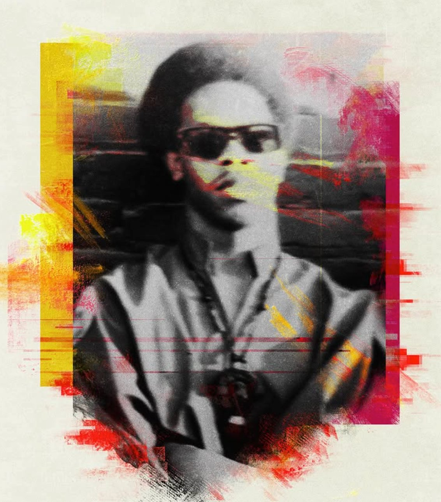
Original member of US, the Black Nationalist organization that gave the world Kwanzaa.
An original member of US — the Black Nationalist organization founded by Maulana Karenga — Stiner was part of the movement that gave the world Kwanzaa, the pan-African holiday now celebrated by millions. The FBI's COINTELPRO program deliberately targeted and dismantled US through covert harassment and manufactured conflict, a documented chapter of government-sanctioned suppression of Black political organizing in America.
Follow on Instagram →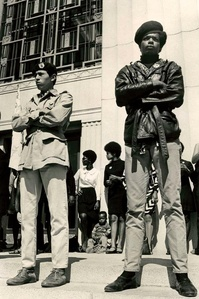
Founding member of Oakland's Brown Berets, initiating the Black and Brown solidarity movement.
One of the founding members of Oakland's Brown Berets, Lorena served as personal security for Black Panther Party co-founder Bobby Seale. The Brown Berets stood in solidarity with the Panthers in the belief that the struggle for equality was inseparable across Black and Brown communities — a coalition that the establishment feared and worked to suppress.
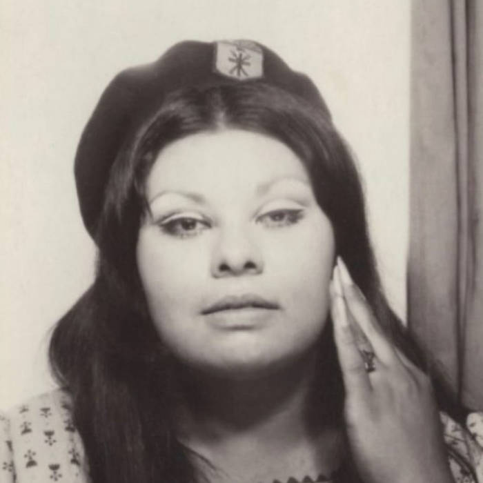
The first woman to serve as minister in the Brown Berets. She didn't just hold a title — she built free clinics, a feminist movement, and a newspaper.
The first woman to serve as minister in the Brown Berets, Arellanes didn't just hold the title — she built infrastructure. She established free clinics serving communities that mainstream healthcare ignored, helped give rise to the Chicana Feminist movement, and founded La Causa, the organization's newspaper that put their mission in print and in the hands of the people.
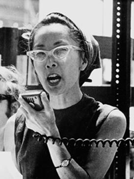
A Japanese American interned during WWII who became one of Malcolm X's closest confidantes. When he was assassinated in 1965, she held his head in her lap. She told that story in Room 213 in 2009.
A Nisei — second-generation Japanese American — Kochiyama was interned by the U.S. government during WWII, an experience that forged her lifelong commitment to human rights. She befriended Malcolm X during his years in New York, and on February 21, 1965, she was in the audience at the Audubon Ballroom when he was assassinated. She rushed to the stage and held his head in her lap as he died — a moment captured by Life magazine. In 2009, she told that story in Room 213.
After 46 years in the classroom, this is the list Mr. Green returns to again and again when someone says "I want to understand this better."
Get the Whole Bookshelf →Scroll down through nearly five decades of milestones — from 2026 back to where it all began in the housing projects of Vallejo, California. Each entry is a moment where Mr. Green showed up, did the work, and left something more permanent than a lesson plan behind.
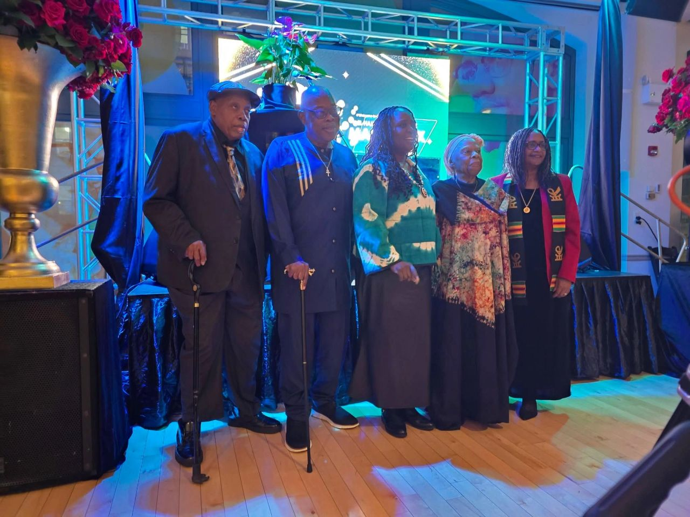
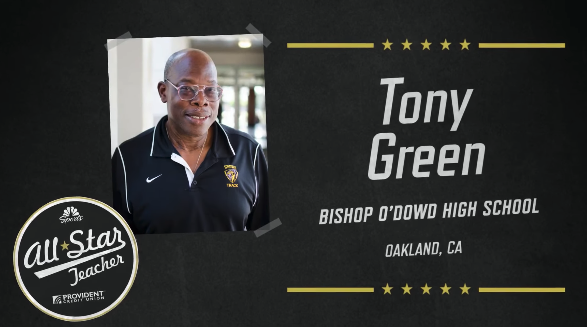
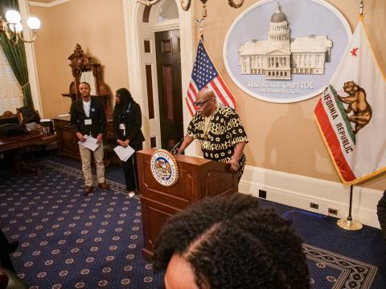
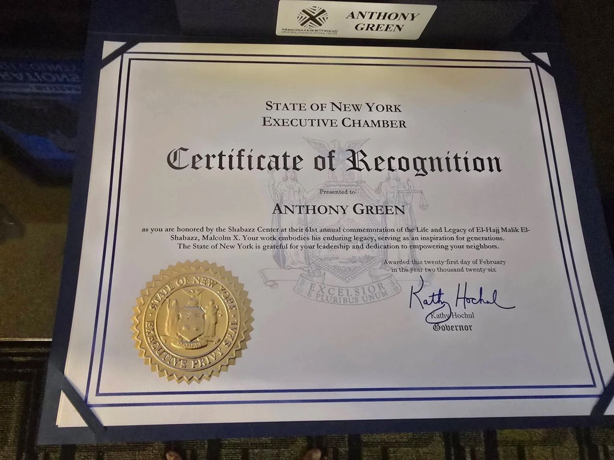
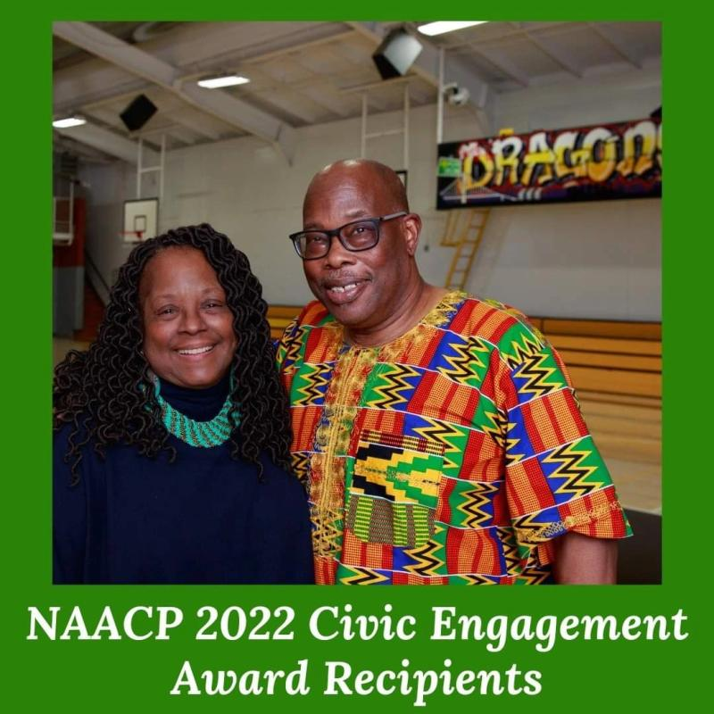
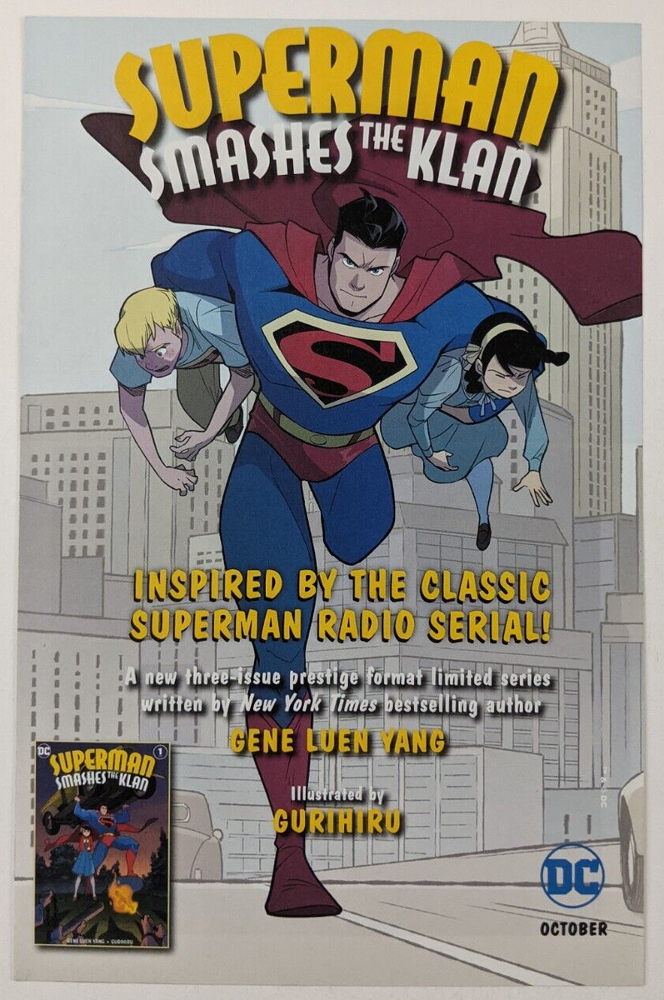
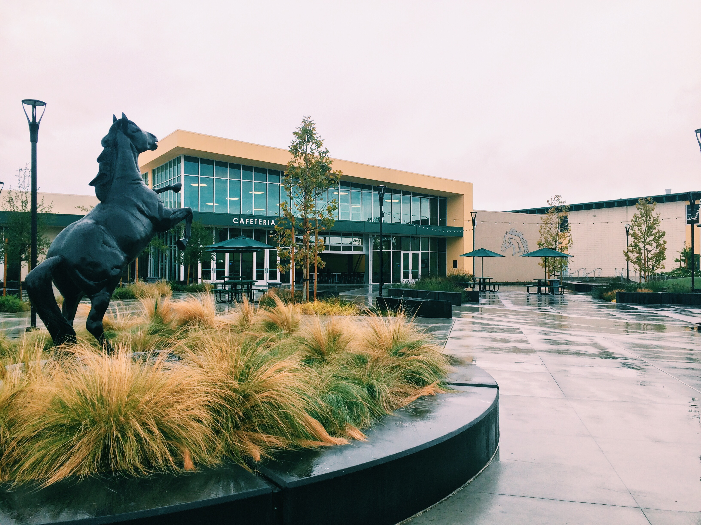